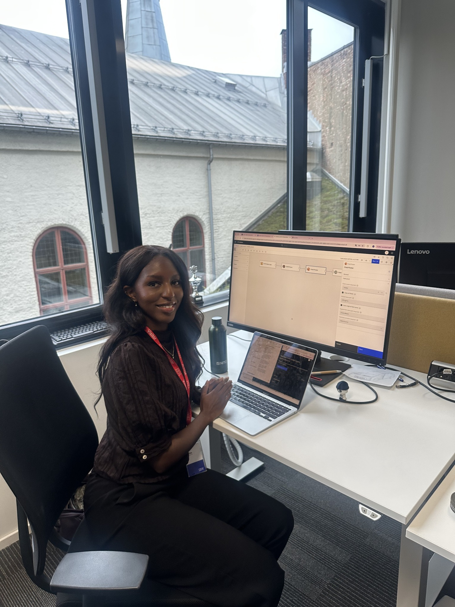
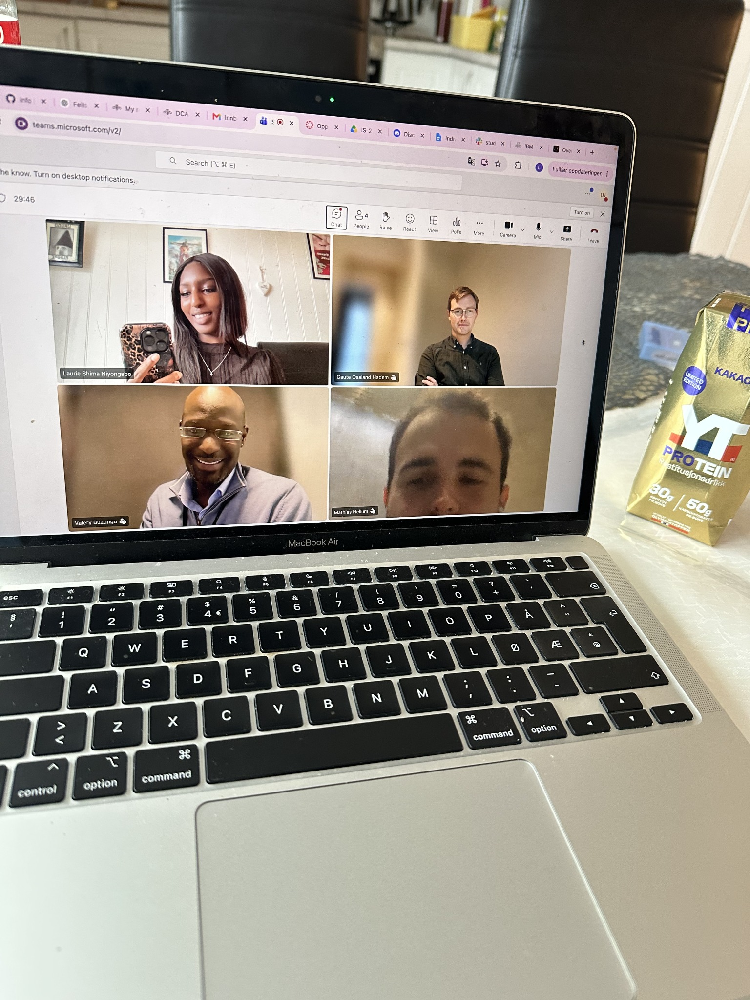

Prosjektdagbok
Ukentlige oppdateringer fra praksisperioden hos IBM.
UKE 43
Fra StreamSets til Kafka – demo og videre arbeid
Denne uken har jeg jobbet videre med dataflyten mellom StreamSets og Confluent Kafka. Jeg har videreutviklet pipelinen, opprettet et Kafka-topic og konfigurert Avro og Schema Registry for å sikre riktig struktur på dataene. Etter en del testing og feilsøking fikk jeg bekreftet at flydataene fra OpenSky ble behandlet og sendt videre til Kafka uten feil. Det var gøy å se at flere av komponentene jeg har jobbet med endelig fungerte sammen.
Jeg har også jobbet videre med lagring i watsonx.data, hvor jeg har opprettet en Iceberg-tabell for flydataene. Mye av arbeidet har gått til å forstå hvordan de ulike teknologiene henger sammen, og neste steg blir å koble Kafka til Iceberg. Jeg fikk også holdt en demo for resten av teamet, hvor jeg viste frem hva jeg har fått til så langt og forklarte dataflyten. Denne uken deltok jeg også på RefreshIT ved UiA, hvor vi fikk møte aktuelle bedrifter og høre om mulige bachelorprosjekter. Det var spennende å se hvilke muligheter som finnes videre etter praksisperioden. I tillegg har jeg forresten jobbet fra hjemmekontor i Frankrike, så det har vært en litt annerledes arbeidshverdag enn vanlig!
Uke 43 i bilder


UKE 42
Videre arbeid med Confluent Kafka
Denne uken har jeg jobbet videre med å forstå hvordan StreamSets skal kobles til Confluent Kafka, som er neste del av dataflyten i prosjektet. Jeg har fått en gjennomgang av hvordan Confluent er satt opp i testmiljøet, og brukt tid på å utforske løsningen selv for å bli bedre kjent med konfigurasjonen.
Jeg har blant annet lært mer om hvordan Kafka bruker brokere til å ta imot og videreformidle data. I vårt miljø kjører Confluent direkte på OpenShift, og vi bruker interne endepunkter i stedet for å eksponere brokerne på internett. Jeg har også sett nærmere på hvordan watsonx.data inngår i integrasjonen mellom tjenestene. Det er flere innstillinger som må være riktige for at komponentene skal kunne kommunisere med hverandre.
En viktig del av arbeidet har vært å forstå oppsettet som allerede er gjort, og prøve å gjenskape deler av det selv. Jeg har også brukt tid på å lese om Kafka og Confluent, siden dette er teknologier jeg ikke har jobbet særlig mye med tidligere. Det har vært nyttig å se hvordan de brukes i et faktisk prosjekt, og ikke bare lese om dem i teorien.
Veien videre er å få koblet StreamSets-pipelinen til Kafka, slik at flydataene fra OpenSky kan sendes videre i plattformen. Jeg skal også fortsette å sette meg inn i hvordan dataene kan lagres og behandles i de neste delene av løsningen.
UKE 41
Oppstart av den praktiske delen
Denne uken er jeg på IBM-kontoret i tre dager, og vi har begynt å jobbe praktisk med IBM StreamSets for å komme i gang med den første delen av datapipelinen. Mye av tiden har gått til å bli kjent med StreamSets, forstå hvordan det fungerer og prøve å få ting til å kjøre som de skal. Vi har støtt på flere problemer underveis, så det har blitt en del feilsøking og testing av ulike løsninger. Vi har også jobbet med å sette opp konfigurasjoner til Confluent, som skal brukes videre i dataflyten. Selv om vi ikke har kommet så langt med selve pipelinen ennå, har det vært lærerikt å jobbe med teknologiene i praksis. Det er en del forskjell på å lese om hvordan noe fungerer og å faktisk prøve å sette det opp selv.

UKE 40
Gjennomgang av teknologiene
Denne uken begynte vi å gå mer konkret gjennom teknologiene vi skal bruke i prosjektet. Det tekniske miljøet var nå satt opp med flere av programmene vi trenger, blant annet OpenShift, Data Fabric, Cloud Pak for Data, watsonx.data og Confluent. Vi hadde også et møte hvor vi gikk gjennom hva de ulike teknologiene gjør, hvordan de henger sammen, og hvilken rolle de skal ha i løsningen vi skal bygge. Det var nyttig å få en bedre oversikt over teknologistacken, spesielt siden mye av dette er nytt for meg. Nå som miljøet er satt opp, begynner vi også å nærme oss den praktiske delen av prosjektet.

UKE 39
Status 1 og en roligere uke
Denne uken hadde vi ingen møter hos IBM, siden flere på teamet hadde ferie. Jeg brukte derfor tiden på å ferdigstille Status 1 til UiA, hvor jeg oppsummerte hva jeg hadde jobbet med og lært så langt i praksisperioden. Vi hadde også en samling hvor vi presenterte statusen vår og diskuterte erfaringer fra de ulike praksisplassene.
UKE 38
Teknisk gjennomgang og videre forberedelser
Denne uken hadde vi møte med de prosjektansvarlige, de andre på teamet og to personer fra den tekniske delen av IBM. Vi gikk mer detaljert gjennom teknologistacken og hvilke tilganger som må på plass. En av de tekniske ressursene hadde tidligere jobbet med et lignende prosjekt og viste oss løsningen sin og hvilke produkter han hadde brukt.
Jeg har ellers fortsatt å gjøre meg kjent med IBM sine produkter og verktøy, blant annet IBM Bob, og jobbet videre med å forstå teknologiene og arkitekturen i prosjektet. Den praktiske implementeringen har ikke startet ennå, siden noen av tilgangene fortsatt må komme på plass.
UKE 37
Bli kjent med prosjektet
Denne uken har jeg hovedsakelig brukt tid på å sette meg bedre inn i prosjektet og de viktigste temaene. Jeg har blant annet lest mer om moderne dataplattformer, data pipelines og datasentrisk sikkerhet, spesielt Attribute-Based Access Control (ABAC).
Det er mange nye teknologier og konsepter sammenlignet med det jeg tidligere har jobbet med på studiet, så mye av arbeidet nå handler om å forstå hvordan de ulike delene henger sammen. Arbeidet med å få nødvendige tilganger har også fortsatt.
UKE 36
Team, teknologier og planlegging
Denne uken møtte jeg resten av teamet og ble kjent med flere av personene som skal bidra i prosjektet. Vi gikk gjennom teknologistacken, den overordnede fremdriftsplanen og hvordan vi skal organisere faste møtepunkter gjennom praksisperioden.
Vi brukte også en del tid på å avklare hvilke tilganger jeg trenger til IBM sine produkter og tjenester. Vi satte opp Slack og fikk på plass en tydeligere plan for kommunikasjon. Jeg fikk også flere dokumenter og presentasjoner fra lignende prosjekter som jeg kunne begynne å lese meg opp på.
UKE 35
Prosjektavklaring og første møte
Jeg var kort innom IBM-kontoret og møtte de to hovedansvarlige for prosjektet. Vi gikk gjennom prosjektets scope og konkretiserte prosjektbeskrivelsen, slik at det ble tydeligere hva jeg skal jobbe med gjennom praksisperioden. Etter møtet ble prosjektbeskrivelsen sendt til emneansvarlig ved UiA for godkjenning.
Fokuset var først og fremst å få en bedre forståelse av prosjektet, forventningene og hva jeg skal jobbe med videre.